Android 安装和使用教程
1. 申明
本教程适用于所有 Android 设备。建议您先浏览本文全文后再进行操作。 本教程仅供学术研究和交流！ 如果您是在微信中打开此教程，建议您通过浏览器浏览此教程，否则可能会影响软件的下载。
2. 客户端
您可以在
* 开源社区 GitHub *
下载安装 APK，或在
* Google Play 国际版 *
上下载客户端。 我们提取了下载地址，在下方提供了便捷链接，可直接下载。
直 接 下 载
注意：是国际版的 Google Play，如果您没有国际版的帐号，请直接下载 APK！ 下载完成后不要忘了安装哦！
3. 安装 小飞机 - Shadowsocks
如果您是用微信打开的话，先点击手机右上角的三个点，然后选择手机自带的浏览器打开，这样才能下载成功。 如果是电脑下载的，请导入到手机里进行安装。 安装完成后在桌面可以看到这个 App。
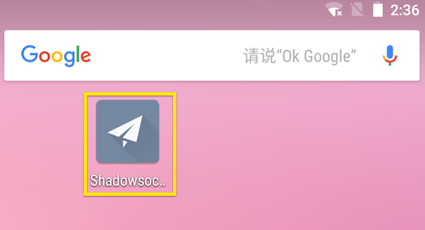
4. 首页和删除默认配置
打开 APP，你看到的首页是这个样子。它会默认一个配置，这个配置是没有用的，可以左滑或者右滑删除掉。
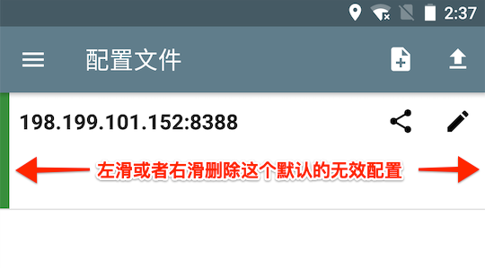
5. 添加新配置
点击右上角的加号，选择 "手动设置"。当然，您也可以选择扫描二维码添加配置，需要先将客服发送的二维码保存到本地相册，然后再选择扫描相册二维码。或者，您也可以将客服发送的链接复制，然后选择“从剪切板导入”。这三种方式都是可以添加配置信息的，您可以任选其中一种添加！
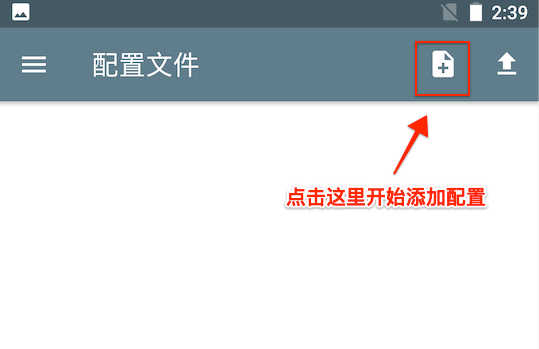
5.1 [三选一] 通过扫描二维码添加配置（注意：如果系统弹出授权，请允许）
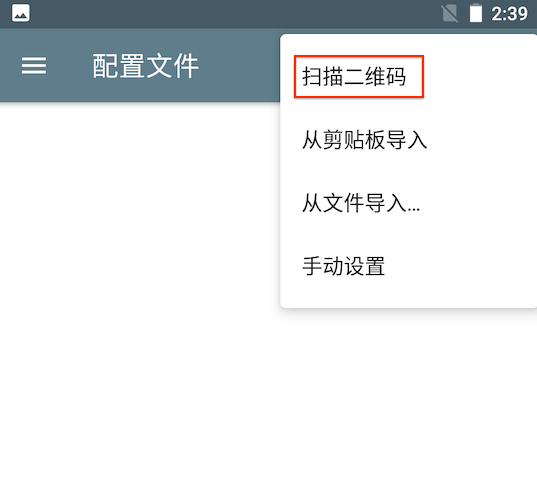
5.2 [三选一] 通过链接添加配置（需要先复制客服发送的链接）
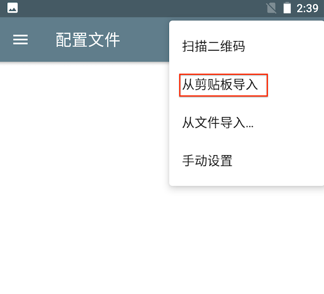
5.3 [三选一] 手动输入配置信息
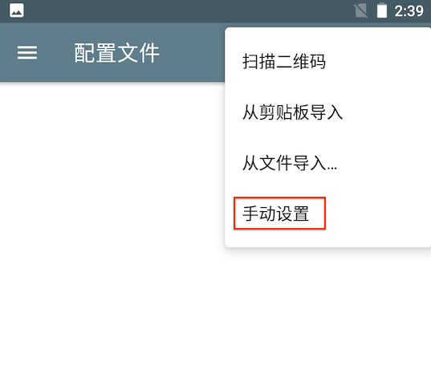
进入添加配置的设置界面后，按照下图所示，根据我们给您的数据进行填写。 温馨提示：图中数据为示例/无效数据，
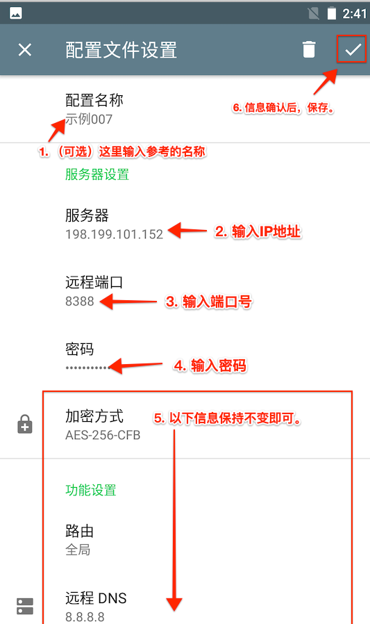
7. 选中新加配置
添加完毕返回到首页，注意看，首页有了你新添加的配置。注意，配置的最左侧是灰色的，说明未被使用，点击配置，最左侧变为绿色，说明使用该配置（如下图）。同时，如果发现配置填写错误，可以点击右侧的小铅笔再次编辑修改。
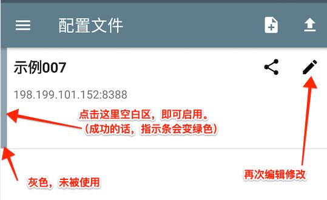
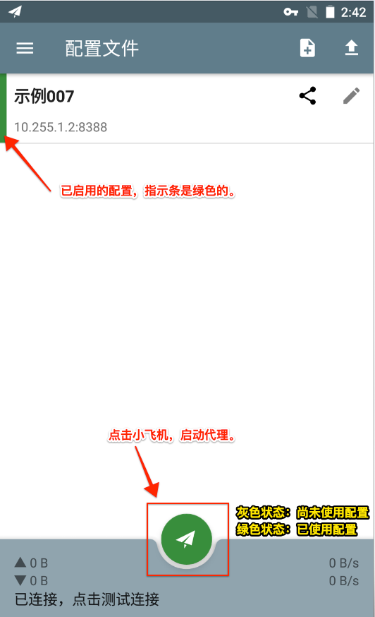
小飞机即为开关按钮，如果处于灰色状态，说明是关闭中；可点击打开连接，打开即为绿色。 配置完成后，若首次点击"小飞机"，系统提示需要授权 VPN 管理权限，点击确定即可。
9. 测试是否连接成功
打开浏览器看看是否能上谷歌了（在浏览器中输入：google.com）。（强烈建议不要使用国产浏览器，尤其是华为小米自带的浏览器，此处推荐 Chrome！）。 最后，恭喜你，91已经加速了。
10. 多配置
您可以添加多个配置，但是只能使用一个配置进行加速。您可以随时切换使用这些配置。不要忘记点击小飞机使用VPN。
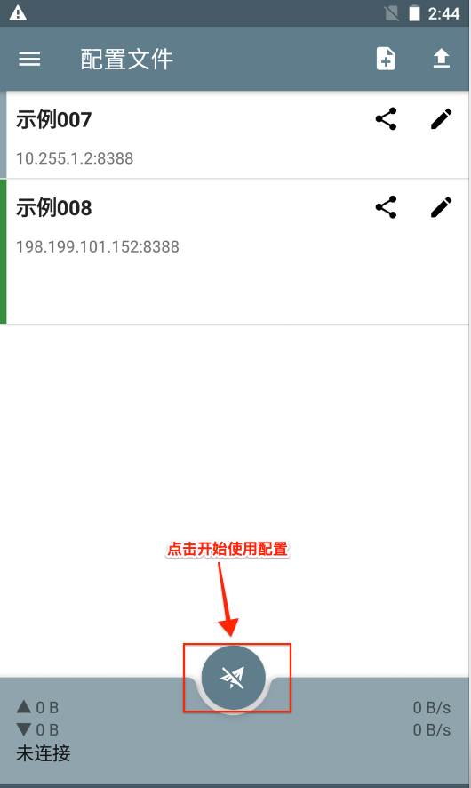
11. 开机启动
上面的配置你就可以正常使用了，下面我会讲解部分高级设置。可以从屏幕左侧右滑调出侧边栏，或者点击左上角的三横展开侧边栏，进行高级设置。
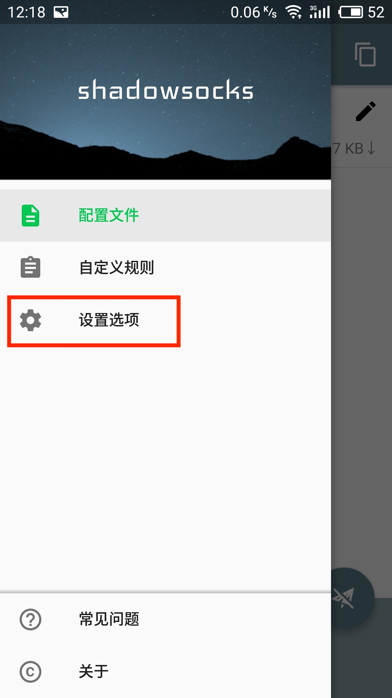
可以点击 “设置选项”，进入设置选项，打开 “自动连接”。这样的好处是手机开机启动，该程序就自动启动，让你不会每次重启手机都需要点开程序再次启动。
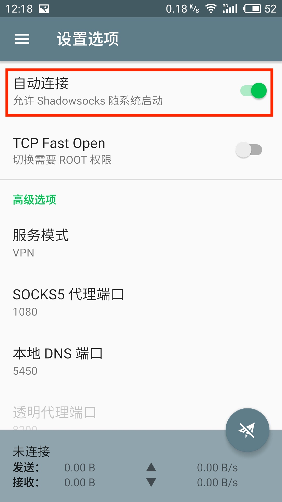
【重要】建议您在科学上网的时候，将360安全卫士，腾讯管家之类的手机安全卫士退出。这些手机安全卫士很可能会记录您的上网信息，并上报GFW，导致您无法继续加速，严重情况会被查水表哦。或者您在不需要加速的时候，将小飞机暂停即可。
×
"未受信任的企业级开发者"的解决办法
因苹果公司的政策原因，在iOS系统中首次安装企业版应用时会出现"未受信任的企业级开发者"提示
解决办法如下（以iOS11系统为例）：
1、在手机中打开设置功能，选择"通用"
2、在通用中，选择"描述文件与设备管理"功能
3、在描述文件与设备管理中的企业级应用分类中，选择要安装的企业应用的文件名称（与打开时的提示一致），点击进入
4、进入企业签名页面后，确认企业签名中的公司名称与应用名称后，点击信任"企业签名公司名称"
5、回到桌面，重新打开应用即可使用
一键跳转，立即信任